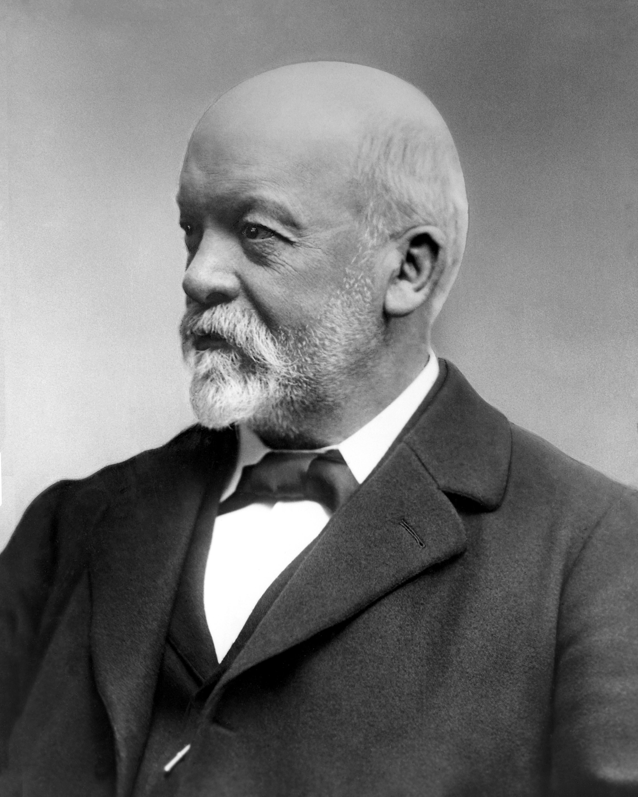
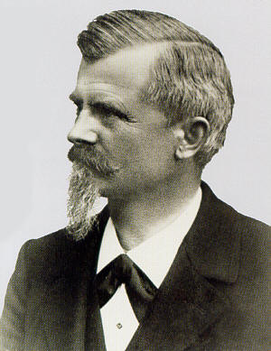

Nascimento da Marca
A história da Mercedes-Benz começa bem antes do seu lançamento oficial, em 1924. Para contarmos essa história precisamos relembrar as trajetórias de Gottlieb Daimler e Karl Benz, responsáveis pela criação da Mercedes e por construíram paralelamente os primeiros automóveis motorizados do mundo.
Em 1871, Carl Benz construiu o primeiro carro com três rodas movido por um motor de combustão interna, em 1891 desenvolveu também seu primeiro carro com quatro rodas. Ele criou então a Benz & Cia., a primeira linha de montagem de veículos e a maior do mundo no início do século XX.
Gottlieb Daimler, juntamente com seu parceiro na época, Wilhelm Maybach, construíram em 1885 o primeiro protótipo de um motor movido a gás. No ano seguinte, a dupla juntou seu motor a uma carroça e criou o primeiro automóvel à gás.
Em 1890, Daimler e Maybach fundaram a Daimler-Motoren-Gesellschaft (DMG) e também passaram a produzir veículos para comercialização.
Naquela altura, Benz & Cia. e a DMG eram as maiores rivais do setor de automóveis.

Descrição: Gottlieb Daimler

Descrição: Wilhelm-maybach
A junção dos rivais
Em 1926, com a instabilidade econômica sofrida pela indústria de automóveis após a Primeira Guerra Mundial, Daimler e Benz resolveram unir suas forças. Então as duas maiores montadoras da época tornaram-se uma só e levaram o nome de Daimler Benz AG.
Na época, a montadora era responsável pelo desenvolvimento de motores, automóveis e caminhões.
O surgimento do nome Mercedes
Em abril de 1900, Emil Jellinek, um rico empreendedor europeu de automóveis, e a DMG assinaram um acordo de distribuição de veículos e motores. Jellinek solicitou que o nome de um automóvel, fosse Mercedes 35HP, em homenagem a sua filha que se chamava Mercedes. Em troca, Jellinek encomendou 36 veículos pelo preço global de 550 mil marcos, que, em valores atuais, correspondem a 5,5 milhões de reais.
Este primeiro "Mercedes", desenvolvido por Wilhelm Maybach, construtor chefe da DMG, fez furor no início do século. As características do veículo - entre elas, seus baixos pontos de apoio, quadro de aço prensado, motor leve de alto desempenho e radiador tipo colmeia - representavam uma riqueza de inovações que o tornaram o primeiro automóvel moderno.
Em meados de 1901, a Daimler passa a adotar "Mercedes" como nome de sua marca. Com a fusão da DMG e Benz & Cia., Karl decidiu acrescentar "Benz" na marca Mercedes.

Descrição: Fusão da DMG e Benz & Cia
O nascimento da estrela
O mundialmente famoso símbolo da Mercedes-Benz teve um início profético. Representando a triplicidade das atividades da Daimler, fabricante de motores para uso em terra, mar e ar, a estrela de três pontas foi adotada como logotipo em 1909, após a morte de Gottlieb Daimler.
Foi inspirada numa figura que ele havia desenhado num postal, o qual remeteu à sua esposa com o seguinte comentário: um dia essa estrela brilhará sobre a minha obra.

Descrição: Angemeldet - 1909
Ao longo dos anos, o símbolo passou por várias alterações. Em 1923 foi acrescentado o círculo. E três anos depois, com a fusão das empresas Daimler e Benz, foi incluída a coroa de louros, do logotipo da Benz. A forma definitiva foi adotada em 1933 e desde então se mantém inalterada.

Descrição: Mercedes-Benz 1933
Desenvolvimento dos veículos atuais
Desde a origem de sua criação, a Mercedes-Benz tem DNA inovador, sendo responsável por algumas das mais revolucionárias tecnologias automotivas do mundo. A marca segue até os dias atuais preservando essa identidade.
Não é à toa que os veículos Mercedes-Benz são alguns dos mais luxuosos e cobiçados em todo o mundo. Quesitos como tecnologia de ponta, conforto extraordinário e potência acima da média ajudam a explicar o motivo de tanto sucesso.

Descrição: Mercedes-Benz
Aproveite fotos de algumas das obras de arte desta marca:
Maybach


Outro Carro
Outro Carro